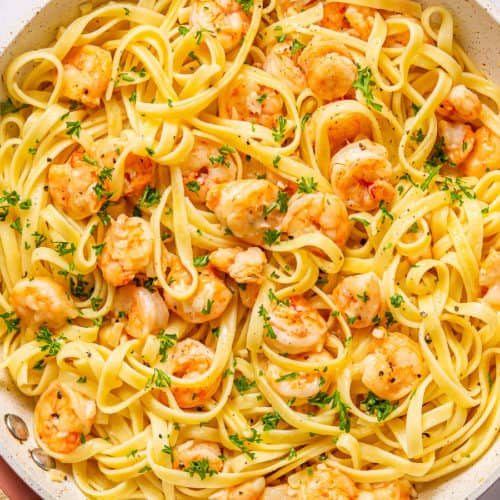

Garlic Butter Shrimp Pasta

Garlic Butter Shrimp Pasta, a simple yet flavorful dish that comes together in no time.
Tender shrimp are cooked in a luscious garlic butter sauce with a hint of broth for depth of flavor.
This savory mixture is then combined with perfectly cooked pasta,
resulting in a harmonious blend of textures and tastes.
Ingredients
- 8 ounces (225g) pasta (linguine, spaghetti, or your choice)
- 1 pound (450g) large shrimp, peeled and deveined
- 4 cloves garlic, minced
- 4 tablespoons (56g) butter
- 1/4 cup (60ml) chicken or vegetable broth
- Salt and pepper to taste
- Red pepper flakes (optional, for some heat)
- Fresh parsley, chopped (for garnish)
Steps
- Cook the Pasta
- Bring a large pot of salted water to a boil.Add the pasta and cook according to package instructions until al dente. Drain and set aside.
- Prepare the Shrimp
- While the pasta is cooking, pat the shrimp dry with paper towels and season with salt and pepper.
- Cook the Shrimp
- In a large skillet or pan, melt 2 tablespoons of butter over medium-high heat. Add the shrimp and cook for about 1-2 minutes per side, or until they turn pink and opaque. Remove the shrimp from the pan and set aside.
- Make the Garlic Butter Sauce
- In the same skillet, add the remaining 2 tablespoons of butter. Add the minced garlic and cook for about 30 seconds to 1 minute, until fragrant. Be careful not to burn the garlic.
- Combine the Shrimp, Pasta, and Sauce
- Return the cooked shrimp to the skillet. Pour in the chicken or vegetable broth and stir to combine. Cook for an additional 2-3 minutes, allowing the flavors to meld and the sauce to thicken slightly.
- Combine with Pasta
- Add the cooked pasta to the skillet and toss until it's well coated with the garlic butter sauce and mixed with the shrimp.
- Serve
- Season with additional salt and pepper if needed. If you like a little heat, you can add red pepper flakes at this point. Garnish with freshly chopped parsley.